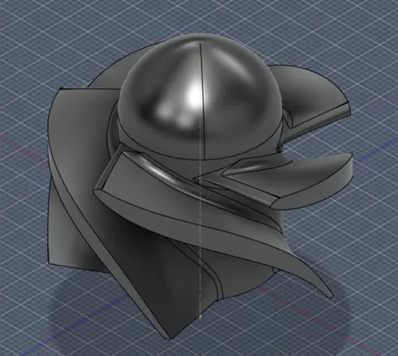
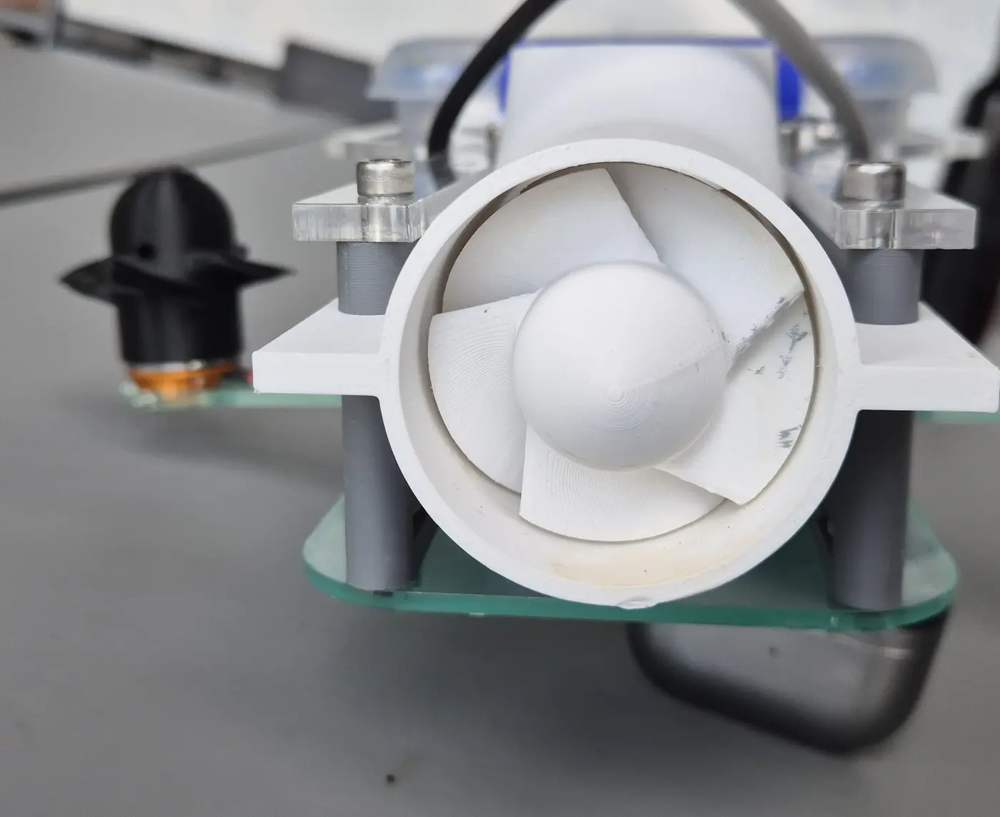
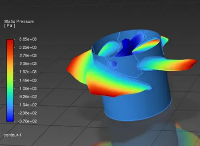
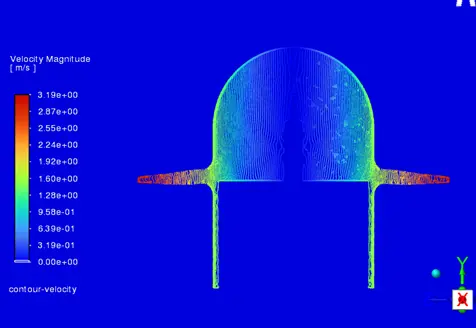
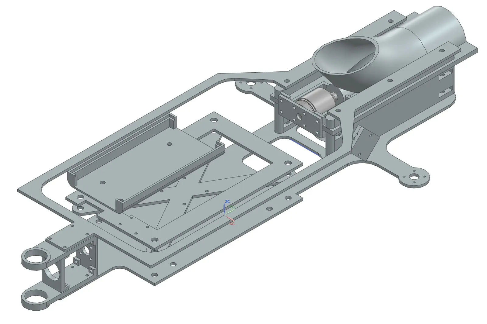
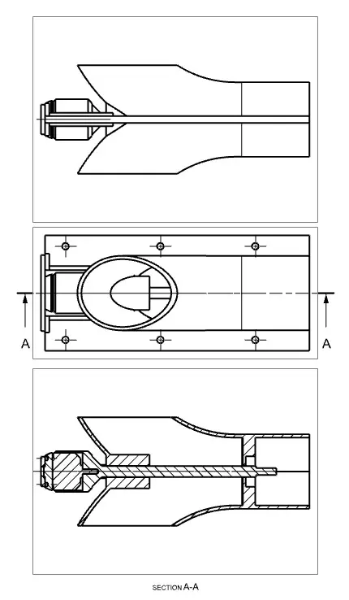
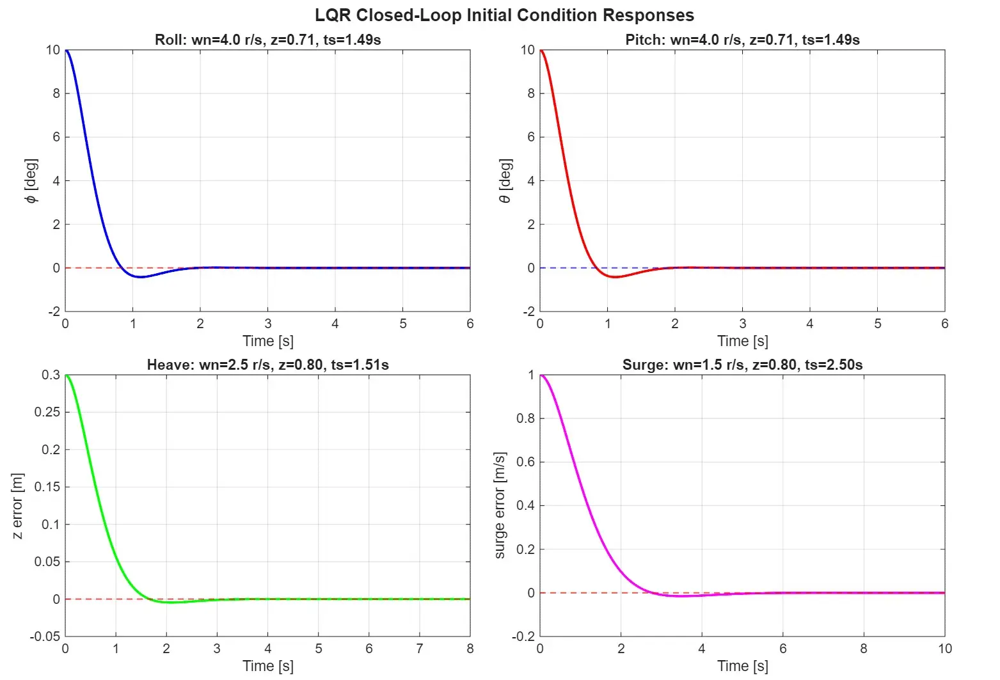

← All projects
University
AquaGate underwater vehicle
A tethered underwater vehicle with three thrusters and an axial jet: modelling, sensor fusion and LQR control.
The project
AquaGate is a submersible that has to hold its attitude and depth on its own. Three vertical thrusters control roll, pitch and depth, and an axial jet impeller drives it forward.
The team modelled the 6-degree-of-freedom dynamics in water, fused IMU data for attitude, designed LQR gains and auto-generated the controller from Simulink onto a dual-core STM32H755.
What I did
- Thruster allocation that maps roll, pitch and depth commands to three thrusters.
- LQR gain synthesis, tuned over several iterations of closed-loop responses.
- Impeller design checked with CFD for pressure and velocity.
Under the hood
MATLAB / Simulinkdynamics model, LQR design and auto-generated embedded code.
STM32H755 + BNO055 IMUon-board control and attitude estimation.
CFDpressure and velocity around the jet impeller.
Renders, results and photos





